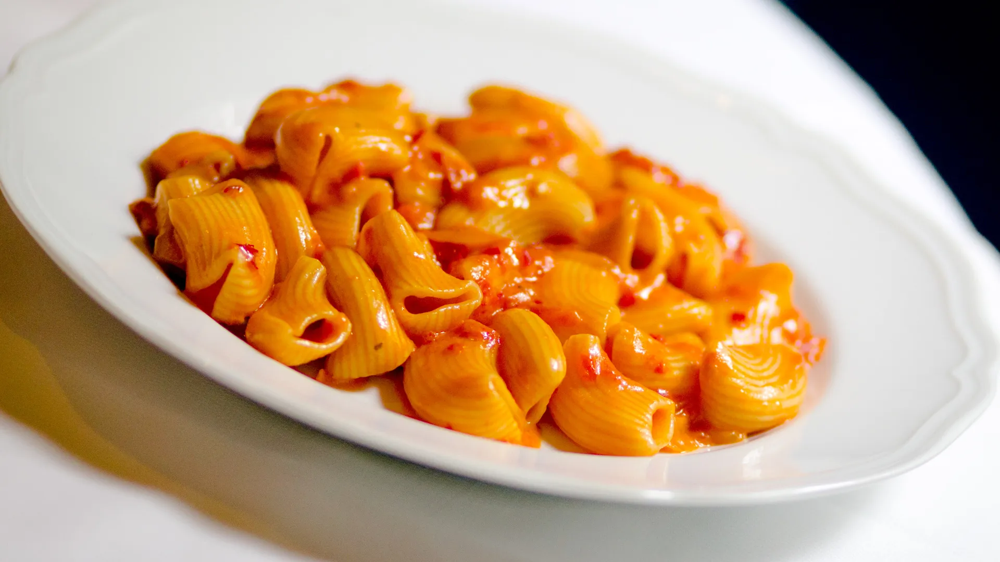

Home
Penne alla Vodka
Penna alla Vodka

On a Wednesday in April 2020, Gigi Hadid dispatched an Instagram story detailing her recipe for spicy vodka sauce for
two. It was a few weeks into the lockdowns, and all over the country, boules of sourdough quivered, forgotten as they
sat proofing on countertops, their creators’ attention turned elsewhere. To a place where acerbic met sweet, where
cheesy met creamy, where all of that met al dente, and where, best of all, it happened in less time than it took to
stream an episode of Tiger King. Americans watched with bated breath as Hadid added one half cup of heavy cream to a
mixture of caramelized shallot, garlic, and tomato paste. The dairy intrusion produced a mottled red-and-white Pollock
which, after confident strokes with a wooden spoon, eventually coalesced into a thick, Nickelodeon-orange sauce, velvety
enough to coat her conchigliette.
Ingredients
- 2 tbsp olive oil for pan
- 1/2 white onion finely chopped
- Kosher salt to taste
- 3 cloves garlic grated into a paste
- 1 tsp Calabrian chili peppers finely chopped
- 1/2 cup tomato paste
- 1 tbsp unsalted butter
- 1 lb conchiglie (or a pasta of your choice)
- 1/4 cup vodka
- 2/3 cup heavy cream
- 2/3 cup parmesan cheese
Steps
- Season a large pot or skillet with olive oil and heat on medium heat.
- Add the onion. Season with a generous pinch of salt and cook for 5 minutes, tossing every 1 minute or so until the
onions are softened and translucent.
- Add the Calabrian chili peppers and garlic and cook for 2 minutes, until fragrant.
- Adjust the heat to medium high and add the tomato paste to the pan. Mix to combine with the other ingredients, then add
1 tbsp of butter into the tomato paste mixture. Let it melt, add a generous pinch of salt and stir together. Cook the
tomato paste for approximately 7-9 minutes, letting the tomato paste brown on the bottom of the pan. If the pan is
drying up, add a little more olive oil. Toss every 1-2 minutes or so to prevent uneven cooking.
- While the tomato paste is cooking, fill a large stockpot with water and season with 3 tablespoons of kosher salt. Bring
to a boil.
- Pour the vodka into the pan, over top of the tomato paste and scrape up all golden brown bits from the bottom. Mix all
of the ingredients together. Adjust the heat to low and add the heavy cream. Stir until combined and let it simmer on
low heat.
- Add the pasta to the pot and cook until al dente according to the package instructions (should be about 8 minutes.)
- Adjust the heat on the sauce to medium-low, then transfer 2/3 cup of pasta water and shredded Parmesan to the sauce and
stir together. Taste to make sure the levels are salt are to your liking. If you would like more salt, feel free to add
a light pinch or more cheese.
- Transfer the al dente pasta to the sauce and toss until fully coated. Feel free to shred more Parmesan onto the pasta as
you toss it to develop a stickier texture. If you want the sauce to be more "saucy," add more pasta water. Remove the
pasta from the heat when you reach a consistency you like! Enjoy immediately.